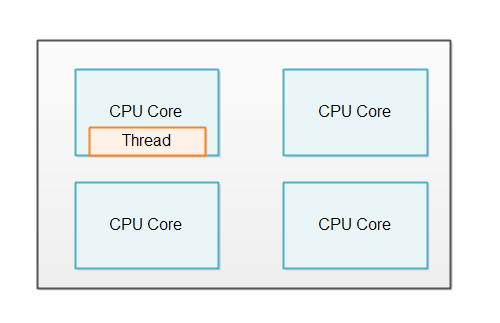
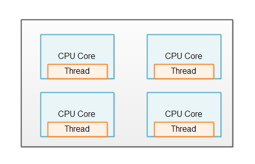
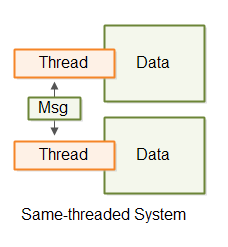
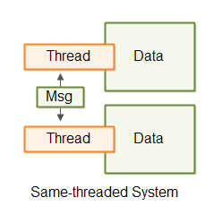

- Java Concurrency / Multithreading Tutorial
- Multithreading Benefits
- Multithreading Costs
- Concurrency Models
- Same-threading
- Concurrency vs. Parallelism
- Creating and Starting Java Threads
- Race Conditions and Critical Sections
- Thread Safety and Shared Resources
- Thread Safety and Immutability
- Java Memory Model
- Java Synchronized Blocks
- Java Volatile Keyword
- Java ThreadLocal
- Thread Signaling
- Deadlock
- Deadlock Prevention
- Starvation and Fairness
- Nested Monitor Lockout
- Slipped Conditions
- Locks in Java
- Read / Write Locks in Java
- Reentrance Lockout
- Semaphores
- Blocking Queues
- Thread Pools
- Compare and Swap
- Anatomy of a Synchronizer
- Non-blocking Algorithms
- Amdahl's Law
- Java Concurrency References
Same-threading
Jakob Jenkov |
Same-threading is a concurrency model where a single-threaded systems are scaled out to N single-threaded systems. The result is N single-threaded systems running in parallel.
A same-threaded system is not a pure single-threaded system, because it contains of multiple threads. But - each of the threads run like a single-threaded system.
Why Single-threaded Systems?
You might be wondering why anyone would design single-threaded system today. Single-threaded systems have gained popularity because their concurrency models are much simpler than multi-threaded systems. Single-threaded systems do not share any data with other threads. This enables single thread to use non-concurrent data structures, and utilize the CPU and CPU caches better.
Unfortunately, single-threaded systems do not fully utilize modern CPUs. A modern CPU often comes with 2, 4 or more cores. Each core functions as an individual CPU. A single-threaded system can only utilize one of the cores, as illustrated here:
Same-threading, Single-threading Scaled Out
In order to utilize all the cores in the CPU, a single-threaded system can be scaled out to utilize the whole computer.
One Thread Per CPU
Same-threaded systems usually has 1 thread running per CPU in the computer. If a computer contains 4 CPUs, or a CPU with 4 cores, then it would be normal to run 4 instances of the same-threaded system (4 single-threaded systems). The illustration below shows this principle:
No Shared State
A same-threaded system looks similar to a multi-threaded system, since a same-threaded system has multiple threads running inside it. But there is a subtle difference.
The difference between a same-threaded and a multi-threaded system is that the threads in a same-threaded system do not share state. There is no shared memory which the threads access concurrently. No concurrent data structures etc. via which the threads share data. This difference is illustrated here:

The lack of shared state is what makes each thread behave as it if was a single-threaded system. However, since a same-threaded system can contain more than a single thread, so it is not really a "single-threaded system". In lack of a better name, I found it more precise to call such a system a same-threaded system, rather than a "multi-threaded system with a single-threaded design". Same-threaded is easier to say, and easier to understand.
Same-threaded basically means that data processing stays within the same thread, and that no threads in a same-threaded system share data concurrently.
Load Distribution
Obviously, a same-threaded system needs to share the work load between the single-threaded instances running. If not, only a single instance will get any work, and the system would in effect be single-threaded.
Exactly how you distribute the load over the different instances depend on the design of your system. I will cover a few in the following sections.
Single-threaded Microservices
If your system consists of multiple microservices, each microservice can run in single-threaded mode. When you deploy multiple single-threaded microservices to the same machine, each microservice can run a single thread on a sigle CPU.
Microservices do not share any data by nature, so microservices is a good use case for a same-threaded system.
Services With Sharded Data
If your system does actually need to share data, or at least a database, you may be able to shard the database. Sharding means that the data is divided among multiple databases. The data is typically divided so that all data related to each other is located together in the same database. For instance, all data belonging to some "owner" entity will be inserted into the same database. Sharding is out of the scope of this tutorial, though, so you will have to search for tutorials about that topic.
Thread Communication
If the threads in a same-threaded need to communicate, they do so by message passing. A thread that wants to send a message to thread A can do so by generating a message (a byte sequence). Thread B can then copy that message (byte sequence) and read it. By copying the message thread B makes sure that thread A cannot modify the message while thread B reads it. Once it is copied it is immutable for thread A.
Thread communication via messaging is illustrated here:
The thread communication can take place via queues, pipes, unix sockets, TCP sockets etc. Whatever fits your system.
Simpler Concurrency Model
Each system running in its own thread in same-threaded system can be implemented as if it was single-threaded. This means that the internal concurrency model becomes much simpler than if the threads shared state. You do not have to worry about concurrent data structures and all the concurrency problems such data structures can result in.
Illustrations
Here are illustrations of a single-threaded, multi-threaded and same-threaded system, so you can easier get an overview of the difference between them.
The first illustration shows a single-threaded system.

The second illustration shows a multi-threaded system where the threads share data.

The third illustration shows a same-threaded system with 2 threads with separate data, communicating by passing messages to each other.
| Tweet | |
Jakob Jenkov | |